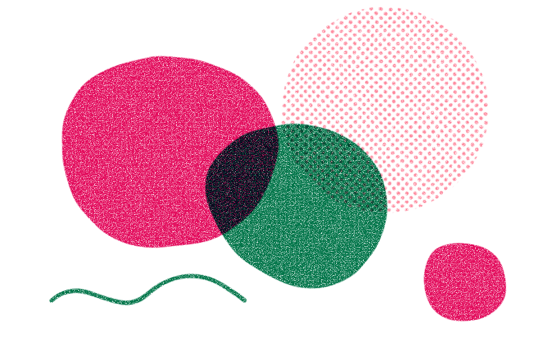
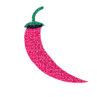
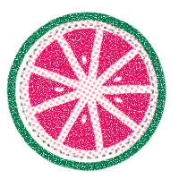
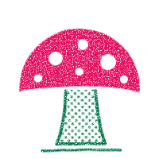
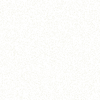
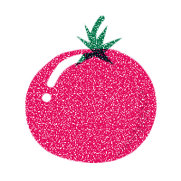

<!doctype html><meta charset="utf-8"><title>Riso preview</title>
<style>body{background:#E4E3C8;font-family:system-ui;padding:24px;margin:0}
main{display:grid;grid-template-columns:repeat(auto-fill,minmax(260px,1fr));gap:24px}
figure{margin:0}.img,.tile{height:240px;border:1px solid #0002;display:grid;place-items:center}
.img img{max-width:90%;max-height:90%}figcaption{font-size:13px;margin-top:6px}</style>
<main><figure><div class="img" style=""></div><figcaption>riso-blobs.svg</figcaption></figure><figure><div class="img" style=""></div><figcaption>riso-chili.svg</figcaption></figure><figure><div class="tile" style="background-image:url(riso-gingham.svg)"></div><figcaption>riso-gingham.svg</figcaption></figure><figure><div class="tile" style="background-image:url(riso-grain.svg)"></div><figcaption>riso-grain.svg</figcaption></figure><figure><div class="img" style=""></div><figcaption>riso-grapefruit.svg</figcaption></figure><figure><div class="tile" style="background-image:url(riso-halftone.svg)"></div><figcaption>riso-halftone.svg</figcaption></figure><figure><div class="img" style=""></div><figcaption>riso-mushroom.svg</figcaption></figure><figure><div class="img" style=""></div><figcaption>riso-nav-edge.svg</figcaption></figure><figure><div class="img" style=""></div><figcaption>riso-speckle.svg</figcaption></figure><figure><div class="img" style=""></div><figcaption>riso-squiggle.svg</figcaption></figure><figure><div class="img" style=""></div><figcaption>riso-tomato.svg</figcaption></figure></main>